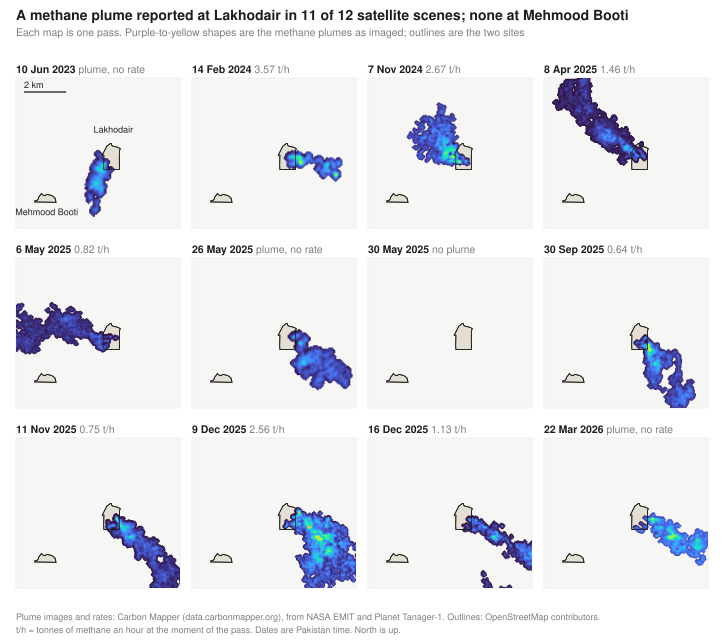
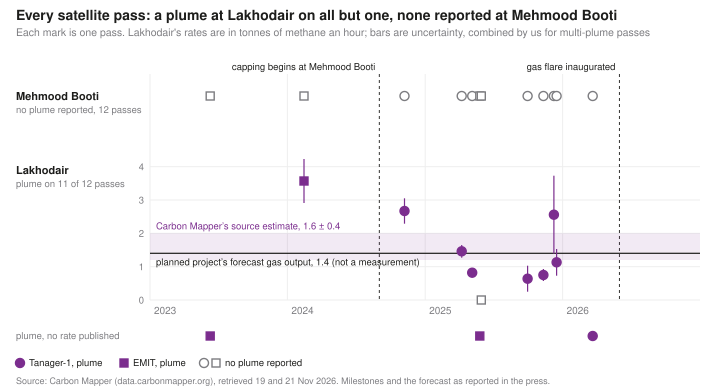
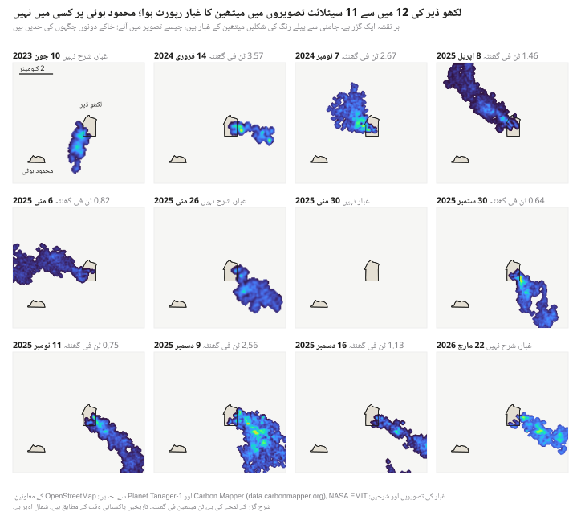
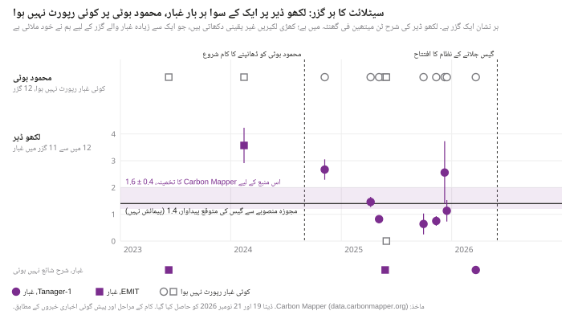
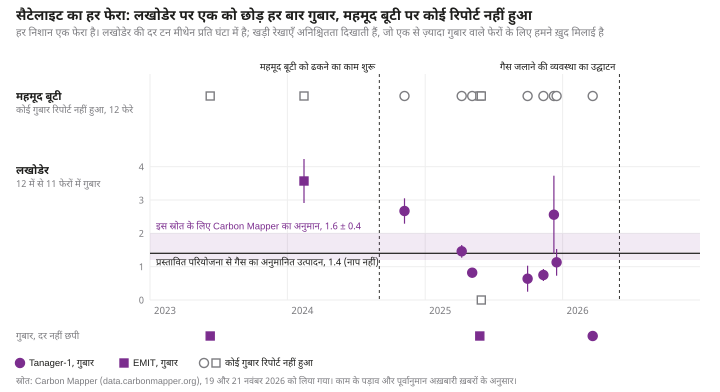

Rotting waste makes methane, a gas nobody can see or smell, and two instruments in orbit can now photograph it. Between June 2023 and March 2026 they recorded 12 scenes covering Lakhodair, Lahore's working landfill, and a methane plume was reported over it in 11 of them. Carbon Mapper, which publishes the data, estimates the source at about 1.6 tonnes of methane an hour. In the same 12 scenes no plume was reported near the old Mehmood Booti dump, 3.6 km away, where work to cap the waste and fit gas wells began in September 2024; 10 of the scenes came after that. A large gas collection project is planned at Lakhodair, and the record gives it a satellite reference from before the project to compare with later. At Mehmood Booti the record is consistent with what the project's managers report. It does not show that the site emits nothing, or that the work is the reason: only 2 scenes predate the work, and what each scene could see at the site has not been checked pixel by pixel.
11 of 12satellite scenes covering Lakhodair had a methane plume reported over it, June 2023 to March 2026
1.6 t/hCarbon Mapper's estimate of Lakhodair's emission rate, in tonnes of methane an hour, adjusted for how often a plume was detected
0 of 12of the same scenes had a plume reported near Mehmood Booti, 3.6 km away
10of the scenes came after capping began at Mehmood Booti in September 2024, 8 by the more sensitive instrument
Check this report. Every number here is in data.json, with its source and method, and the input files and scripts sit alongside it. The plume images and rates are Carbon Mapper's, from NASA's EMIT instrument on the International Space Station and Planet's Tanager-1 satellite; we did not process the satellite data ourselves. Each rate is a snapshot of one moment, with a published uncertainty that runs from about a tenth of the figure to more than half. "No plume" means Carbon Mapper lists none in a scene whose footprint covers the site; it does not mean the site emits nothing, and we have not checked the view of the site in each scene. Facts about the sites and the work on them are as reported in the press and in one official notification. This is a monitoring report; it assigns no blame.
Lakhodair: a plume in 11 of 12 scenes

Lakhodair opened in 2016 and takes 5,000 to 5,500 tonnes of Lahore's waste a day. By March 2026 it held an estimated 18 million tonnes. Two things are happening there, and they should be kept apart. A pilot plant making bio-CNG, a vehicle fuel, was reported to have started production in March 2026, at about 85 kilograms a day; the reports do not say whether it uses gas drawn from the landfill. The large gas collection project, supported by a United Nations programme, held its public consultation in February 2026, and Dawn reported in July 2026 that its feasibility study was due in August 2026. A portfolio of carbon-market projects published by the Climate Vulnerable Forum and V20 group in November 2026 still lists it at the feasibility stage. We found no report that its construction has begun. The site is still receiving waste.
Carbon Mapper, a non-profit that publishes methane data from satellites, has 12 scenes whose footprint covers Lakhodair, from 10 Jun 2023 to 22 Mar 2026: 8 by Tanager-1 and the rest by EMIT. This report calls each such scene a pass. Carbon Mapper lists 19 plumes over the landfill, from 11 of the 12 passes. Only one pass, on 30 May 2025, reported no plume. Carbon Mapper places the start of 18 of the 19 plumes inside the landfill's OpenStreetMap outline and the other about 90 metres outside it. The outline is not a surveyed boundary and satellite positions carry some uncertainty, so that offset alone does not point to a separate source. The plumes trail downwind for several kilometres. That is what an active landfill without large-scale gas collection is expected to do, and it is the reason the project is planned.
Satellite passes over Lakhodair, Pakistan time. The rate is the sum of the plumes that have a published rate. Where a pass has more than one, the ± is our combination of Carbon Mapper's figures, not its own
Pass
Instrument
Plumes
Tonnes of methane an hour
10 Jun 2023, 08:57
EMIT (space station)
1
no rate published
14 Feb 2024, 14:24
EMIT (space station)
1
3.6 ± 0.7
7 Nov 2024, 11:03
Tanager-1
1
2.7 ± 0.4
8 Apr 2025, 11:16
Tanager-1
3
1.5 ± 0.2 (two of three plumes)
6 May 2025, 11:19
Tanager-1
2
0.8 ± 0.1
26 May 2025, 13:24
EMIT (space station)
1
no rate published
30 May 2025, 11:48
EMIT (space station)
0
no plume reported
30 Sep 2025, 11:40
Tanager-1
1
0.6 ± 0.4
11 Nov 2025, 11:46
Tanager-1
2
0.8 ± 0.2
9 Dec 2025, 11:50
Tanager-1
2
2.6 ± 1.2
16 Dec 2025, 11:51
Tanager-1
2
1.1 ± 0.4
22 Mar 2026, 12:06
Tanager-1
3
no rate published

The 8 passes with a published rate range from 0.6 to 3.6 tonnes an hour. They rise and fall from pass to pass with the wind and with what the instrument could see, and do not establish a reliable trend. On the 5 passes with more than one rated plume we added the plumes' rates and combined their published uncertainties as if they were independent. Plumes in one scene share a wind estimate, so the true uncertainty is probably wider: for 8 Apr 2025, when two of three plumes had a rate, it is ±0.19 our way and ±0.26 if the errors are fully shared. Carbon Mapper's own estimate for the source is 1.6 ± 0.4 tonnes an hour. That is not a plain average of the 12 passes. Carbon Mapper averages the passes that have a rate, which gives 1.7, and scales that by the share of passes on which it detected a plume, 11 of 12. If that rate held around the clock it would be about 37 tonnes of methane a day, or roughly 14,000 tonnes a year. The passes are all in daylight and number only 12, so that is a rough scale, not a measurement of the year.
The planners' figure is close, but it measures something else
Dawn reported in July 2026 that the planned project is expected to generate about 18.8 million cubic metres of methane a year for upgrading into fuel, and about 275,000 carbon credits a year. The November 2026 portfolio gives a lower estimate of emission reductions, 190,000 tonnes of carbon dioxide equivalent a year, which it calls the proponent's estimate before deductions. Both are forecasts, not verified reductions or issued credits. In weight the gas forecast is roughly 12,600 tonnes of methane, or 1.4 tonnes an hour. Carbon Mapper's estimate from the satellites is 1.6 ± 0.4.
The two numbers are close, but they are not two measurements of the same thing. The satellites estimate methane escaping to the air at the moment of a pass. The project's figure is a forecast of gas a plant not yet built would produce. How much a landfill generates, how much can be collected and how much escapes all differ. The similarity shows only that both figures are of the same order: tonnes of methane an hour, not kilograms. It does not confirm either one.
Earlier estimates were higher. In August 2021 the European Sentinel-5P satellite recorded large methane clouds over Lahore, and Bloomberg reported that October that the Lahore Waste Management Company had confirmed two of them came from the landfill. A study in Science Advances in 2022 used the GHGSat satellites to measure the site in 2020 and 2021 and put it at 6.4 tonnes an hour, with individual measurements from 2.3 to 16.0. Dawn reported in October 2024 that an internal estimate made with the LandGEM model put the site's methane at 76,558 tonnes in 2023, which works out to 8.7 tonnes an hour. These come from different instruments, years and methods, and the gaps between them are not evidence that the leak has grown or shrunk.
A satellite record from before the project
Lakhodair now has a record from before its project: 12 passes, 11 with a plume, an estimated rate of 1.6 tonnes an hour, all recorded before any large-scale gas collection exists. It is a reference from a few daytime scenes, not a formal carbon-credit baseline, which a monitoring methodology would set. Mehmood Booti, as the next section shows, has no such "before". If wells and a flare are built at Lakhodair, repeated passes by the same satellites could help show whether plumes there become rarer or smaller, provided the viewing conditions and the number of passes are comparable. The catalogue is public and costs the project nothing.
Two cautions apply. The rates scatter widely from pass to pass, so it will take many passes after the project starts, not one or two, to show a change. And collection systems typically capture 60 to 90% of the gas, the US Environmental Protection Agency says, not all of it. So plumes may persist after collection begins, and if they stop being reported, that would not show that all the methane is being captured.
Mehmood Booti: no plume reported in 12 scenes
The work
Mehmood Booti took Lahore's waste from 1997 and stopped taking most of it in 2016. Dawn reported that it holds about 13 million tonnes on 42 acres. A Rs 3.37 billion project to close it began in September 2024: a cap over the waste, wells to collect the gas, an urban forest and a solar park. Dawn reported 52 gas wells in March 2025; the development authority's bidding documents specified 72. We could not establish how many were installed.
Several public bodies are involved. The Lahore Waste Management Company and the Ravi Urban Development Authority are carrying out the project. The Environment Protection Agency Punjab, following a petition in the Lahore High Court, notified a committee on 5 March 2025 to assess solid waste and greenhouse gas emissions at the site, with a report due on 27 March 2025; we could not find that report.
The development authority said in June 2026 that the first phase was complete and that gas was being captured. That month a system to burn the collected gas was inaugurated and the second phase was launched. In November 2026 outside validators visited the site for a carbon-credit registration that expects more than 900,000 credits between 2026 and 2040. The carbon-market portfolio published by the Climate Vulnerable Forum and V20 group in November 2026 lists 3 related projects at Mehmood Booti, all at what it calls the feasibility stage: a wastewater treatment plant with estimated reductions of 491,000 tonnes of carbon dioxide equivalent a year, the dump's rehabilitation at 100,000 and a methane capture project at 13,827. It says their volumes may overlap and will be reconciled when the project boundary is defined. All of these are forecasts, not verified reductions.
What the satellites reported
The same 12 scenes cover Mehmood Booti, 3.6 km from Lakhodair: 8 by Tanager-1 and 4 by EMIT. Carbon Mapper lists no plume within a kilometre of the site in any of them.
How much weight that carries depends on what each pass could see, and we can only partly answer that.
Timing. 10 of the passes came after the work began, 8 of them by Tanager-1, the more sensitive instrument.
Cloud and haze. Carbon Mapper publishes a cloud figure for each Tanager-1 scene as a whole. It is 6% or less for 7 of the 8, and 62% for the other, on 7 Nov 2024. The records carry two other quality figures that do not all agree with it. A second cloud field, given in steps of 25 and with a definition we could not find, reads 50 or 75 for 5 of the 8 scenes, 4 of them scenes whose first figure is 6% or less. A haze figure reads 52% for 6 May 2025 and under 5% for the others that have one. We have not reconciled these fields, so the low cloud figures are not proof of a clear view. The EMIT scenes carry only the second field. All these numbers describe the whole scene, tens of kilometres across, not the patch over the dump. The files that would show the site pixel by pixel need a Carbon Mapper account, and we have not examined them.
Methane nearby. In 11 of the 12 scenes a plume is reported over Lakhodair, 3.6 km away. That shows the scene was usable there. It does not establish what the view was over Mehmood Booti.
Sensitivity. Carbon Mapper says Tanager-1 detects a source of 90 to 180 kilograms an hour nine times in ten. That is for favourable wind, light and ground, not a fixed threshold for every pass. Lakhodair's estimated rate is 9 to 17 times that figure, so a concentrated leak on Lakhodair's scale would probably have been reported under suitable conditions. Gas seeping thinly across the whole surface of a dump could go unreported.
So the claim the data supports is a limited one: no methane plume was reported at Mehmood Booti in any scene covering it, including the 10 since capping began. That is consistent with what the project's managers report. It is not 12 confirmed measurements of no emission.
How far that goes
It does not yet prove that the capping is the reason, and it is fair to the project to say why.
No fall has been observed. Only 2 passes came before the work began, and they too reported no plume. Both were by EMIT, which reliably detects only sources of about 700 kilograms an hour or more. So the record shows no plume before and none after, not a reduction. Tanager-1's first pass was on 7 Nov 2024, after the work had started.
The dump was already ageing. A site that stopped receiving most waste in 2016 makes less gas each year in any case; one model study put its peak in 2017.
Small or diffuse leaks are invisible. A site can release less than the detection limit, or release gas too thinly spread to form a plume, and show nothing.
The record stops in March 2026. No pass in the catalogue is later than 22 Mar 2026, so none has yet looked at the site since the flaring system was inaugurated in June 2026.
A useful next figure would be the measured amount of gas collected and burned. No report we found gives one. Carbon-credit registrations normally rest on metered figures, so one should follow. Meters show what the system captures and destroys, not what still escapes, so that figure would sit beside the satellite record and not replace it.
Other sites around Lahore
Carbon Mapper's catalogue has 20 satellite scenes over the Lahore area and one methane source in them, Lakhodair. Press reports name other dumps in use, at Sundar, Tibba and Saggian. We could not establish their exact positions, so we cannot say which passes covered them. No plume is listed anywhere else in the area.
What this means for Lahore's air
Methane is not what makes the air grey in November. Smog in Lahore is mostly fine particles, PM2.5, and methane is an invisible gas that does not form them directly. Capturing landfill gas will not, on its own, change the reading on an air-quality monitor in winter. It is right to be clear about that.
What it can improve is narrower, and still worth having.
Possibly less fire and explosion hazard. Landfill gas is 45 to 60% methane, and methane burns when it makes up 5 to 15% of the air; a report for the United States fire administration says it plays a large part in how landfill fires start. Managing the gas may reduce some of that hazard. The satellite record cannot show it. Fire-watching satellites have recorded 21 heat detections inside Lakhodair's outline on 11 days since it opened, 19 of them between March and June and none in October or November. A heat detection is not a confirmed fire: its pixel is 375 metres across, and we found no report from the ground of any of them. No methane pass fell within a week of one, the closest being 18 days away. These detections do not establish what caused the heat or whether collecting the gas would make it rarer.
Cleaner air beside the site. Landfill gas carries small amounts of other gases, including hydrogen sulphide, which gives dumps their smell, and organic compounds that are harmful to breathe nearby. Burning the gas destroys most of the organic compounds, the US Environmental Protection Agency says, though burning it also gives off some nitrogen oxides.
Less ozone, slowly. Methane is one of the ingredients of ground-level ozone, a pollutant that harms lungs and crops. This works across whole regions over the roughly 12 years methane stays in the air, not as a local cloud over the city. A United Nations assessment in 2021 estimated that cutting the world's methane emissions by 45% would prevent about 260,000 early deaths a year.
Climate. Tonne for tonne, methane warms the planet about 80 times as much as carbon dioxide over 20 years and about 27 times as much over 100. This is the benefit the carbon credits pay for.
Heat detections are a weaker guide at Mehmood Booti. The fire-watching satellites have recorded 13 inside its outline since 2012, 3 of them since the work began. All were at night and none was stronger than 0.9 megawatts. Steel furnaces stand beside the site and give off heat of their own, so we cannot say what these were.
What the data can and cannot tell us
It can show that a methane plume was reported at Lakhodair in 11 of the 12 scenes covering it, and that none was reported at Mehmood Booti in the same scenes.
It cannot show that each of those scenes had a clear, usable view of Mehmood Booti. We had only scene-wide cloud and haze figures, and they do not all agree.
It can show roughly how much Lakhodair was releasing at the moment of each pass; the published uncertainty runs from about a tenth of the rate to more than half.
It cannot show that the capping caused the clean record at Mehmood Booti. The two earlier passes reported no plume either.
It cannot show anything since March 2026, the date of the latest pass.
It cannot show a yearly total or a trend. The passes are few and all in daylight, under varying cloud and haze, and not every scene is known to have had a clear view of each site.
It cannot show small leaks. Tanager-1 reliably detects sources of about 90 to 180 kilograms an hour, and EMIT about 700.
It cannot show what the methane does to the air people breathe. It measures gas leaving a site, not what reaches anyone.
Method and sources
Methane plumes: Carbon Mapper's public data portal, retrieved on 19 November 2026 and again, unchanged, on 21 November: every methane plume, source and scene footprint in the box 31.2–31.8°N, 73.9–74.7°E. Source: Carbon Mapper, data.carbonmapper.org. The plume images in the maps are Carbon Mapper's, placed on the bounds it publishes for each.
Passes: a pass over a site is a scene whose footprint covers the site's centre. We did not check the pixels over the site. Cloud figures are Carbon Mapper's scene-wide ones; each pass's figures are in data.json. Detection limits are Carbon Mapper's for Tanager-1 and a published conference figure for EMIT, both for favourable conditions.
Heat detections: NASA FIRMS, VIIRS 375 m active fire product from the S-NPP, NOAA-20 and NOAA-21 satellites, 20 January 2012 to 17 November 2026. firms.modaps.eosdis.nasa.gov
Outlines: OpenStreetMap ways 961551528 and 1370790548. Lakhodair, Mehmood Booti. Mehmood Booti's outline encloses about 67 acres, more than the 42 acres given for the dump in the project's documents; the two are different boundaries.
J. D. Maasakkers and others. Using satellites to uncover large methane emissions from landfills. Science Advances 8, eabn9683, 2022. doi.org
UNEP Copenhagen Climate Centre. Lakhodair stakeholder consultation, 9 March 2026. unepccc.org; Dawn, 18 July 2026, www.dawn.com
Climate Vulnerable Forum and V20. Carbon Markets Investment Book, first version, November 2026, pages 44 to 55. cvfv20.org
Ravi Urban Development Authority. Rehabilitation of Mehmood Booti Dumpsite, bidding documents. ruda.gov.pk
Reports on the pilot bio-CNG plant at Lakhodair, 10 March 2026: Business Recorder, www.brecorder.com; The News, www.thenews.pk
“A Rs 230 million Eid-ul-Azha operation.” The News on Sunday, 17 May 2026. www.thenews.pk
US Agency for Toxic Substances and Disease Registry. Landfill Gas Primer. www.atsdr.cdc.gov
UNEP and Climate and Clean Air Coalition. Global Methane Assessment, 2021, as summarised by the World Meteorological Organization. wmo.int
US Environmental Protection Agency. Benefits of landfill gas energy projects. www.epa.gov
“Landfill fires: their magnitude, characteristics and mitigation” (summary of US Fire Administration report FA-225, 2002). Fire Engineering. www.fireengineering.com
World Health Organization. Dioxins fact sheet. www.who.int
The input files behind every chart and table, and the scripts that make them, are in the site's repository under scripts/reports/landfill-methane/analysis/.
گلتا سڑتا کچرا میتھین بناتا ہے، ایک ایسی گیس جو نہ دکھائی دیتی ہے نہ اس کی بو آتی ہے، اور اب خلا میں موجود دو آلے اس کی تصویر لے سکتے ہیں۔ جون 2023 سے مارچ 2026 کے درمیان ان آلات نے لکھو ڈیر کی 12 تصویریں لیں، جو لاہور کا زیرِ استعمال لینڈ فل ہے، اور ان میں سے 11 میں اس کے اوپر میتھین کا غبار رپورٹ ہوا۔ یہ ڈیٹا شائع کرنے والے ادارے Carbon Mapper کا تخمینہ ہے کہ یہاں سے تقریباً 1.6 ٹن میتھین فی گھنٹہ خارج ہوتی ہے۔ انہی 12 تصویروں میں 3.6 کلومیٹر دور محمود بوٹی کے پرانے ڈمپ کے قریب کوئی غبار رپورٹ نہیں ہوا۔ وہاں کچرے کو ڈھانپنے اور گیس کے کنویں لگانے کا کام ستمبر 2024 میں شروع ہوا تھا، اور 10 تصویریں اس کے بعد کی ہیں۔ لکھو ڈیر پر گیس جمع کرنے کا ایک بڑا منصوبہ زیرِ غور ہے، اور یہ ریکارڈ اسے منصوبے سے پہلے کا ایک سیٹلائٹ حوالہ دیتا ہے جس سے بعد کا موازنہ کیا جا سکے۔ محمود بوٹی پر یہ ریکارڈ اس بات سے مطابقت رکھتا ہے جو منصوبے کے منتظمین بتاتے ہیں۔ مگر اس سے یہ ثابت نہیں ہوتا کہ وہاں سے کچھ خارج نہیں ہو رہا، یا یہ کہ وجہ یہی کام ہے: صرف 2 تصویریں کام شروع ہونے سے پہلے کی ہیں، اور یہ جانچ نہیں ہوئی کہ ہر تصویر میں اس جگہ کا ایک ایک پکسل کتنا صاف نظر آیا۔
11 / 12لکھو ڈیر کی اتنی سیٹلائٹ تصویروں میں اس کے اوپر میتھین کا غبار رپورٹ ہوا، جون 2023 سے مارچ 2026 تک
1.6 t/hلکھو ڈیر سے اخراج کی شرح کا Carbon Mapper کا تخمینہ، ٹن میتھین فی گھنٹہ؛ اس میں یہ بھی شامل ہے کہ غبار کتنی بار نظر آیا
0 / 12انہی تصویروں میں سے اتنی میں 3.6 کلومیٹر دور محمود بوٹی کے قریب غبار رپورٹ ہوا
10تصویریں ستمبر 2024 میں محمود بوٹی کو ڈھانپنے کا کام شروع ہونے کے بعد کی ہیں، ان میں سے 8 زیادہ حساس آلے کی
اس رپورٹ کو خود جانچیں۔ اس رپورٹ کا ہر عدد data.json میں اپنے ماخذ اور طریقے کے ساتھ موجود ہے، اور خام فائلیں اور اسکرپٹ بھی ساتھ رکھے گئے ہیں۔ غبار کی تصویریں اور اخراج کی شرحیں Carbon Mapper کی ہیں، جو بین الاقوامی خلائی اسٹیشن پر نصب NASA کے آلے EMIT اور Planet کے سیٹلائٹ Tanager-1 سے لی گئی ہیں؛ سیٹلائٹ ڈیٹا کو ہم نے خود پروسیس نہیں کیا۔ ہر شرح ایک لمحے کی تصویر ہے، اور اس کے ساتھ شائع ہونے والی غیر یقینی کی حد عدد کے تقریباً دسویں حصے سے لے کر آدھے سے زیادہ تک ہے۔ ”غبار نہیں“ کا مطلب یہ ہے کہ جس تصویر کے دائرے میں وہ جگہ آتی ہے اس میں Carbon Mapper نے کوئی غبار درج نہیں کیا؛ اس کا یہ مطلب نہیں کہ وہاں سے کچھ خارج نہیں ہو رہا، اور ہم نے یہ نہیں جانچا کہ ہر تصویر میں وہ جگہ کتنی صاف نظر آئی۔ دونوں جگہوں اور وہاں ہونے والے کام کے بارے میں حقائق وہی ہیں جو اخبارات اور ایک سرکاری نوٹیفکیشن میں آئے ہیں۔ یہ نگرانی کی رپورٹ ہے؛ اس میں کسی کو قصوروار نہیں ٹھہرایا گیا۔
لکھو ڈیر: 12 میں سے 11 تصویروں میں غبار

لکھو ڈیر 2016 میں کھلا اور یہاں روزانہ لاہور کا 5,000 سے 5,500 ٹن کچرا آتا ہے۔ مارچ 2026 تک یہاں اندازاً 18 ملین ٹن کچرا جمع ہو چکا تھا۔ یہاں دو الگ کام ہو رہے ہیں، اور انہیں الگ ہی رکھنا چاہیے۔ خبروں کے مطابق گاڑیوں کا ایندھن بائیو سی این جی بنانے والے ایک آزمائشی پلانٹ نے مارچ 2026 میں پیداوار شروع کی، تقریباً 85 کلوگرام روزانہ؛ خبروں میں یہ نہیں بتایا گیا کہ آیا یہ لینڈ فل سے نکالی گئی گیس استعمال کرتا ہے۔ گیس جمع کرنے کے بڑے منصوبے کو اقوامِ متحدہ کے ایک پروگرام کی مدد حاصل ہے؛ اس کی عوامی مشاورت فروری 2026 میں ہوئی، اور ڈان نے جولائی 2026 میں خبر دی کہ اس کی فزیبلٹی اسٹڈی اگست 2026 میں مکمل ہونی ہے۔ کلائمیٹ ولنرایبل فورم اور V20 گروپ نے نومبر 2026 میں کاربن مارکیٹ کے منصوبوں کی جو فہرست شائع کی، اس میں یہ منصوبہ اب بھی فزیبلٹی کے مرحلے میں درج ہے۔ ہمیں ایسی کوئی خبر نہیں ملی کہ اس کی تعمیر شروع ہو چکی ہے۔ یہاں اب بھی کچرا آ رہا ہے۔
Carbon Mapper ایک غیر منافع بخش ادارہ ہے جو سیٹلائٹوں سے حاصل میتھین کا ڈیٹا شائع کرتا ہے۔ اس کے پاس 10 جون 2023 سے 22 مارچ 2026 تک کی 12 ایسی تصویریں ہیں جن کے دائرے میں لکھو ڈیر آتا ہے: 8 Tanager-1 کی اور باقی EMIT کی۔ اس رپورٹ میں ایسی ہر تصویر کو ایک ”گزر“ کہا گیا ہے۔ Carbon Mapper نے لینڈ فل کے اوپر 19 غبار درج کیے ہیں، جو 12 میں سے 11 گزر میں نظر آئے۔ صرف ایک گزر میں، 30 مئی 2025 کو، کوئی غبار رپورٹ نہیں ہوا۔ Carbon Mapper کے مطابق 19 میں سے 18 غبار لینڈ فل کی OpenStreetMap والی حد کے اندر سے شروع ہوتے ہیں اور ایک اس سے تقریباً 90 میٹر باہر سے۔ یہ حد باقاعدہ پیمائش سے نہیں کھینچی گئی اور سیٹلائٹ کے بتائے ہوئے مقام میں بھی کچھ غیر یقینی ہوتی ہے، اس لیے صرف اتنے فرق سے کسی الگ منبع کا پتا نہیں چلتا۔ غبار ہوا کے رخ پر کئی کلومیٹر تک پھیلتے ہیں۔ جس چالو لینڈ فل پر بڑے پیمانے پر گیس جمع نہ کی جا رہی ہو، اس سے یہی توقع ہوتی ہے، اور اسی وجہ سے یہ منصوبہ بنایا گیا ہے۔
لکھو ڈیر پر سیٹلائٹ کے گزر، پاکستانی وقت۔ شرح ان غباروں کا مجموعہ ہے جن کی شرح شائع ہوئی ہے۔ جہاں ایک گزر میں ایک سے زیادہ غبار ہیں وہاں ± ہم نے Carbon Mapper کے اعداد ملا کر نکالا ہے، یہ اس کا اپنا عدد نہیں
گزر
آلہ
غبار
ٹن میتھین فی گھنٹہ
10 جون 2023, 08:57
EMIT (خلائی اسٹیشن)
1
شرح شائع نہیں ہوئی
14 فروری 2024, 14:24
EMIT (خلائی اسٹیشن)
1
3.6 ± 0.7
7 نومبر 2024, 11:03
Tanager-1
1
2.7 ± 0.4
8 اپریل 2025, 11:16
Tanager-1
3
1.5 ± 0.2 (تین میں سے دو غبار)
6 مئی 2025, 11:19
Tanager-1
2
0.8 ± 0.1
26 مئی 2025, 13:24
EMIT (خلائی اسٹیشن)
1
شرح شائع نہیں ہوئی
30 مئی 2025, 11:48
EMIT (خلائی اسٹیشن)
0
کوئی غبار رپورٹ نہیں ہوا
30 ستمبر 2025, 11:40
Tanager-1
1
0.6 ± 0.4
11 نومبر 2025, 11:46
Tanager-1
2
0.8 ± 0.2
9 دسمبر 2025, 11:50
Tanager-1
2
2.6 ± 1.2
16 دسمبر 2025, 11:51
Tanager-1
2
1.1 ± 0.4
22 مارچ 2026, 12:06
Tanager-1
3
شرح شائع نہیں ہوئی

جن 8 گزر کی شرح شائع ہوئی ہے وہ 0.6 سے 3.6 ٹن فی گھنٹہ تک ہے۔ یہ شرح ہوا کے ساتھ اور اس کے ساتھ بدلتی رہتی ہے کہ آلے کو کتنا نظر آیا، اور اس سے کوئی قابلِ بھروسا رجحان ثابت نہیں ہوتا۔ جن 5 گزر میں ایک سے زیادہ غباروں کی شرح موجود تھی، وہاں ہم نے شرحیں جمع کیں اور ان کی شائع شدہ غیر یقینی کو یوں ملایا جیسے وہ ایک دوسرے سے آزاد ہوں۔ ایک ہی تصویر کے غباروں کے لیے ہوا کا تخمینہ ایک ہی ہوتا ہے، اس لیے اصل غیر یقینی غالباً اس سے زیادہ ہے: 8 اپریل 2025 کو، جب تین میں سے دو غباروں کی شرح موجود تھی، ہمارے طریقے سے یہ ±0.19 بنتی ہے اور اگر غلطیاں پوری طرح مشترک ہوں تو ±0.26۔ اس منبع کے لیے Carbon Mapper کا اپنا تخمینہ 1.6 ± 0.4 ٹن فی گھنٹہ ہے۔ یہ 12 گزر کا سادہ اوسط نہیں۔ Carbon Mapper پہلے ان گزر کا اوسط نکالتا ہے جن کی شرح موجود ہے، جو 1.7 بنتا ہے، پھر اسے اس تناسب سے ضرب دیتا ہے کہ کتنے گزر میں غبار نظر آیا، یعنی 12 میں سے 11۔ اگر یہ شرح چوبیس گھنٹے برقرار رہے تو یہ روزانہ تقریباً 37 ٹن میتھین، یا سالانہ لگ بھگ 14,000 ٹن بنتی ہے۔ سارے گزر دن کی روشنی کے ہیں اور صرف 12 ہیں، اس لیے یہ ایک موٹا اندازہ ہے، پورے سال کی پیمائش نہیں۔
منصوبہ سازوں کا عدد قریب ہے، مگر وہ کسی اور چیز کا عدد ہے
ڈان نے جولائی 2026 میں خبر دی کہ مجوزہ منصوبے سے سالانہ تقریباً 18.8 ملین مکعب میٹر میتھین حاصل ہونے کی توقع ہے، جسے صاف کر کے ایندھن بنایا جائے گا، اور سالانہ تقریباً 275,000 کاربن کریڈٹ۔ نومبر 2026 کی فہرست میں اخراج میں کمی کا تخمینہ اس سے کم ہے، سالانہ 190,000 ٹن کاربن ڈائی آکسائیڈ کے برابر، جسے فہرست منصوبہ پیش کرنے والوں کا کٹوتیوں سے پہلے کا تخمینہ کہتی ہے۔ دونوں پیش گوئیاں ہیں، تصدیق شدہ کمی یا جاری شدہ کریڈٹ نہیں۔ وزن میں گیس کی یہ پیش گوئی لگ بھگ 12,600 ٹن میتھین، یا 1.4 ٹن فی گھنٹہ بنتی ہے۔ سیٹلائٹوں کی بنیاد پر Carbon Mapper کا تخمینہ 1.6 ± 0.4 ہے۔
دونوں عدد قریب قریب ہیں، مگر یہ ایک ہی چیز کی دو پیمائشیں نہیں۔ سیٹلائٹ اس میتھین کا اندازہ لگاتے ہیں جو گزر کے لمحے فضا میں خارج ہو رہی ہو۔ منصوبے کا عدد اس گیس کی پیش گوئی ہے جو ایک ایسا پلانٹ پیدا کرے گا جو ابھی بنا نہیں۔ لینڈ فل کتنی گیس بناتا ہے، اس میں سے کتنی جمع کی جا سکتی ہے اور کتنی نکل جاتی ہے، یہ تینوں الگ الگ چیزیں ہیں۔ اس مماثلت سے صرف اتنا پتا چلتا ہے کہ دونوں عدد ایک ہی درجے کے ہیں: ٹنوں میتھین فی گھنٹہ، کلوگراموں میں نہیں۔ اس سے دونوں میں سے کسی کی تصدیق نہیں ہوتی۔
پہلے کے تخمینے زیادہ تھے۔ اگست 2021 میں یورپی سیٹلائٹ Sentinel-5P نے لاہور کے اوپر میتھین کے بڑے بادل ریکارڈ کیے، اور بلومبرگ نے اسی سال اکتوبر میں خبر دی کہ لاہور ویسٹ مینجمنٹ کمپنی نے تصدیق کی ہے کہ ان میں سے دو لینڈ فل سے اٹھے تھے۔ 2022 میں Science Advances میں چھپنے والی ایک تحقیق نے GHGSat سیٹلائٹوں سے 2020 اور 2021 میں اس جگہ کی پیمائش کی اور اخراج 6.4 ٹن فی گھنٹہ بتایا، جبکہ الگ الگ پیمائشیں 2.3 سے 16.0 تک تھیں۔ ڈان نے اکتوبر 2024 میں خبر دی کہ LandGEM ماڈل سے لگائے گئے ایک اندرونی تخمینے کے مطابق 2023 میں یہاں سے 76,558 ٹن میتھین خارج ہوئی، جو 8.7 ٹن فی گھنٹہ بنتی ہے۔ یہ اعداد مختلف آلات، مختلف برسوں اور مختلف طریقوں کے ہیں، اور ان کے درمیان فرق اس بات کا ثبوت نہیں کہ اخراج بڑھا ہے یا گھٹا ہے۔
منصوبے سے پہلے کا سیٹلائٹ ریکارڈ
لکھو ڈیر کے پاس اب اپنے منصوبے سے پہلے کا ریکارڈ موجود ہے: 12 گزر، 11 میں غبار، اخراج کی تخمینی شرح 1.6 ٹن فی گھنٹہ، اور یہ سب اس وقت کا ہے جب بڑے پیمانے پر گیس جمع کرنے کا کوئی نظام موجود نہیں۔ یہ دن کی چند تصویروں پر مبنی ایک حوالہ ہے، کاربن کریڈٹ کی باقاعدہ بیس لائن نہیں؛ وہ نگرانی کے کسی طے شدہ طریقۂ کار سے مقرر ہوتی ہے۔ محمود بوٹی کے پاس، جیسا کہ اگلے حصے میں آئے گا، ایسا کوئی ”پہلے“ کا ریکارڈ نہیں۔ اگر لکھو ڈیر پر کنویں اور گیس جلانے کا نظام لگ جائے تو انہی سیٹلائٹوں کے بار بار کے گزر سے یہ دیکھنے میں مدد مل سکتی ہے کہ وہاں غبار کم یا چھوٹے ہوئے یا نہیں، بشرطیکہ دیکھنے کے حالات اور گزر کی تعداد موازنے کے قابل ہوں۔ یہ ریکارڈ سب کے لیے کھلا ہے اور منصوبے کو اس پر کچھ خرچ نہیں کرنا پڑتا۔
دو باتوں میں احتیاط ضروری ہے۔ شرح ایک گزر سے دوسرے تک بہت بدلتی ہے، اس لیے منصوبہ شروع ہونے کے بعد تبدیلی دیکھنے کے لیے ایک دو نہیں، بہت سے گزر درکار ہوں گے۔ اور امریکہ کی ماحولیاتی تحفظ کی ایجنسی کے مطابق گیس جمع کرنے کے نظام عموماً 60 سے 90% گیس پکڑتے ہیں، ساری نہیں۔ اس لیے ممکن ہے گیس جمع ہونا شروع ہونے کے بعد بھی غبار نظر آتے رہیں، اور اگر وہ رپورٹ ہونا بند ہو جائیں تو اس سے یہ ثابت نہیں ہوگا کہ ساری میتھین پکڑی جا رہی ہے۔
محمود بوٹی: 12 تصویروں میں کوئی غبار رپورٹ نہیں ہوا
وہاں کیا کام ہوا
محمود بوٹی پر 1997 سے لاہور کا کچرا آتا رہا، اور 2016 میں زیادہ تر کچرا یہاں آنا بند ہو گیا۔ ڈان کے مطابق یہاں 42 ایکڑ پر تقریباً 13 ملین ٹن کچرا پڑا ہے۔ اسے بند کرنے کا 3.37 ارب روپے کا منصوبہ ستمبر 2024 میں شروع ہوا: کچرے کے اوپر ڈھکن، گیس جمع کرنے کے کنویں، ایک شہری جنگل اور ایک سولر پارک۔ ڈان نے مارچ 2025 میں گیس کے 52 کنویں بتائے؛ ترقیاتی ادارے کی بولی کی دستاویزات میں 72 درج ہیں۔ ہم یہ معلوم نہیں کر سکے کہ کتنے لگائے گئے۔
اس کام میں کئی سرکاری ادارے شامل ہیں۔ منصوبہ لاہور ویسٹ مینجمنٹ کمپنی اور راوی اربن ڈیولپمنٹ اتھارٹی چلا رہی ہیں۔ لاہور ہائی کورٹ میں ایک درخواست کے بعد ادارۂ تحفظِ ماحول پنجاب نے 5 مارچ 2025 کو ایک کمیٹی کا نوٹیفکیشن جاری کیا، جسے اس جگہ کے ٹھوس کچرے اور گرین ہاؤس گیسوں کے اخراج کا جائزہ لینا تھا اور 27 مارچ 2025 تک رپورٹ دینی تھی؛ وہ رپورٹ ہمیں نہیں ملی۔
ترقیاتی ادارے نے جون 2026 میں کہا کہ پہلا مرحلہ مکمل ہو گیا ہے اور گیس پکڑی جا رہی ہے۔ اسی مہینے جمع شدہ گیس کو جلانے کے نظام کا افتتاح ہوا اور دوسرا مرحلہ شروع کیا گیا۔ نومبر 2026 میں بیرونی جانچ کاروں نے کاربن کریڈٹ کی رجسٹریشن کے سلسلے میں اس جگہ کا دورہ کیا؛ اس رجسٹریشن سے 2026 سے 2040 کے درمیان 900,000 سے زیادہ کریڈٹ کی توقع ہے۔ کلائمیٹ ولنرایبل فورم اور V20 گروپ کی نومبر 2026 میں شائع ہونے والی کاربن مارکیٹ کی فہرست میں محمود بوٹی کے 3 باہم متعلق منصوبے درج ہیں، اور فہرست کے مطابق سب فزیبلٹی کے مرحلے میں ہیں: گندے پانی کی صفائی کا ایک پلانٹ، جس سے سالانہ 491,000 ٹن کاربن ڈائی آکسائیڈ کے برابر کمی کا تخمینہ ہے، ڈمپ کی بحالی، جس کا تخمینہ 100,000 ہے، اور میتھین پکڑنے کا ایک منصوبہ، جس کا تخمینہ 13,827 ہے۔ فہرست کہتی ہے کہ ان کے اعداد ایک دوسرے میں شامل ہو سکتے ہیں اور منصوبے کی حد طے ہونے پر انہیں الگ الگ کیا جائے گا۔ یہ سب پیش گوئیاں ہیں، تصدیق شدہ کمی نہیں۔
سیٹلائٹوں نے کیا رپورٹ کیا
وہی 12 تصویریں محمود بوٹی کی بھی ہیں، جو لکھو ڈیر سے 3.6 کلومیٹر دور ہے: 8 Tanager-1 کی اور 4 EMIT کی۔ Carbon Mapper نے ان میں سے کسی میں بھی اس جگہ کے ایک کلومیٹر کے اندر کوئی غبار درج نہیں کیا۔
اس بات کا وزن اس پر منحصر ہے کہ ہر گزر میں کتنا نظر آ سکتا تھا، اور اس کا جواب ہم صرف جزوی طور پر دے سکتے ہیں۔
وقت۔ 10 گزر کام شروع ہونے کے بعد کے ہیں، ان میں سے 8 Tanager-1 کے، جو زیادہ حساس آلہ ہے۔
بادل اور دھند۔ Carbon Mapper، Tanager-1 کی ہر پوری تصویر کے لیے بادلوں کا ایک عدد شائع کرتا ہے۔ 8 میں سے 7 تصویروں کے لیے یہ 6% یا اس سے کم ہے، اور باقی ایک کے لیے، جو 7 نومبر 2024 کی ہے، 62%۔ ریکارڈ میں معیار کے دو اور عدد بھی ہیں جو ہر جگہ اس سے میل نہیں کھاتے۔ بادلوں کا ایک دوسرا خانہ ہے، جس کے عدد 25، 25 کے فرق سے دیے جاتے ہیں اور جس کی تعریف ہمیں نہیں ملی؛ 8 میں سے 5 تصویروں کے لیے اس میں 50 یا 75 درج ہے، اور ان میں سے 4 وہ ہیں جن کا پہلا عدد 6% یا اس سے کم ہے۔ دھند کا عدد 6 مئی 2025 کے لیے 52% ہے، اور باقی جن تصویروں کے لیے یہ دیا گیا ہے ان میں 5% سے کم۔ ہم ان خانوں کو آپس میں ملا کر نہیں دیکھ سکے، اس لیے بادلوں کے کم عدد صاف منظر کا ثبوت نہیں۔ EMIT کی تصویروں میں صرف دوسرا خانہ ہے۔ یہ سارے عدد پوری تصویر کے ہیں، جو دسیوں کلومیٹر پر پھیلی ہوتی ہے، ڈمپ کے اوپر والے ٹکڑے کے نہیں۔ جن فائلوں میں یہ جگہ پکسل بہ پکسل دیکھی جا سکتی ہے ان کے لیے Carbon Mapper کا اکاؤنٹ درکار ہے، اور ہم نے انہیں نہیں دیکھا۔
قریب کی میتھین۔ 12 میں سے 11 تصویروں میں 3.6 کلومیٹر دور لکھو ڈیر پر غبار رپورٹ ہوا۔ اس سے پتا چلتا ہے کہ تصویر وہاں کام کی تھی۔ اس سے یہ طے نہیں ہوتا کہ محمود بوٹی کے اوپر منظر کیسا تھا۔
حساسیت۔ Carbon Mapper کے مطابق Tanager-1 دس میں سے نو بار ایسا منبع پکڑ لیتا ہے جو 90 سے 180 کلوگرام فی گھنٹہ خارج کر رہا ہو۔ یہ سازگار ہوا، روشنی اور زمین کے لیے ہے، ہر گزر کے لیے کوئی مقررہ حد نہیں۔ لکھو ڈیر کی تخمینی شرح اس عدد سے 9 سے 17 گنا ہے، اس لیے لکھو ڈیر جتنا بڑا اور ایک جگہ سے نکلنے والا اخراج مناسب حالات میں غالباً رپورٹ ہو جاتا۔ جو گیس ڈمپ کی پوری سطح سے ہلکی ہلکی رِس رہی ہو، وہ رپورٹ ہوئے بغیر رہ سکتی ہے۔
اس لیے ڈیٹا جس دعوے کی تائید کرتا ہے وہ محدود ہے: محمود بوٹی کی کسی بھی تصویر میں میتھین کا غبار رپورٹ نہیں ہوا، ان 10 میں بھی نہیں جو ڈھانپنے کا کام شروع ہونے کے بعد کی ہیں۔ یہ اس بات سے مطابقت رکھتا ہے جو منصوبے کے منتظمین بتاتے ہیں۔ مگر یہ صفر اخراج کی 12 تصدیق شدہ پیمائشیں نہیں۔
اس سے کتنا نتیجہ نکالا جا سکتا ہے
اس سے ابھی یہ ثابت نہیں ہوتا کہ وجہ ڈھانپنے کا کام ہے، اور منصوبے کے ساتھ انصاف یہی ہے کہ بتایا جائے کیوں۔
کوئی کمی دیکھی نہیں گئی۔ صرف 2 گزر کام شروع ہونے سے پہلے کے ہیں، اور ان میں بھی کوئی غبار رپورٹ نہیں ہوا۔ دونوں EMIT کے تھے، جو بھروسے کے ساتھ صرف تقریباً 700 کلوگرام فی گھنٹہ یا اس سے بڑے منبع پکڑتا ہے۔ یعنی ریکارڈ میں پہلے بھی غبار نہیں اور بعد میں بھی نہیں؛ یہ کمی کا ریکارڈ نہیں۔ Tanager-1 کا پہلا گزر 7 نومبر 2024 کو ہوا، جب کام شروع ہو چکا تھا۔
ڈمپ پہلے ہی پرانا ہو رہا تھا۔ جس جگہ 2016 میں زیادہ تر کچرا آنا بند ہو گیا ہو وہ ویسے بھی ہر سال کم گیس بناتی ہے؛ ایک ماڈل پر مبنی تحقیق کے مطابق اس کا اخراج 2017 میں سب سے زیادہ تھا۔
چھوٹے یا پھیلے ہوئے اخراج نظر نہیں آتے۔ کوئی جگہ پکڑ کی حد سے کم گیس خارج کر سکتی ہے، یا اتنی پھیلی ہوئی کہ غبار نہ بنے، اور کچھ نظر نہ آئے۔
ریکارڈ مارچ 2026 پر رک جاتا ہے۔ ریکارڈ میں 22 مارچ 2026 کے بعد کا کوئی گزر نہیں، اس لیے جون 2026 میں گیس جلانے کے نظام کے افتتاح کے بعد سے ابھی کسی سیٹلائٹ نے اس جگہ کو نہیں دیکھا۔
اگلا کارآمد عدد یہ ہوگا کہ کتنی گیس ناپ کر جمع کی گئی اور جلائی گئی۔ ہمیں جو خبریں ملیں ان میں سے کسی میں یہ عدد نہیں۔ کاربن کریڈٹ کی رجسٹریشن عموماً میٹر سے ناپے گئے اعداد پر ہوتی ہے، اس لیے یہ عدد آنا چاہیے۔ میٹر یہ بتاتے ہیں کہ نظام کتنی گیس پکڑ کر تلف کرتا ہے، یہ نہیں کہ کتنی اب بھی نکل رہی ہے، اس لیے وہ عدد سیٹلائٹ ریکارڈ کے ساتھ رکھ کر دیکھا جائے گا، اس کی جگہ نہیں لے گا۔
لاہور کے آس پاس کی دوسری جگہیں
Carbon Mapper کے ریکارڈ میں لاہور کے علاقے کی 20 سیٹلائٹ تصویریں ہیں اور ان میں میتھین کا ایک ہی منبع ہے، لکھو ڈیر۔ اخباری خبروں میں کچرے کے دوسرے زیرِ استعمال ڈمپ بھی بتائے گئے ہیں: سندر، ٹبہ اور سگیاں۔ ہم ان کے ٹھیک ٹھیک مقام معلوم نہیں کر سکے، اس لیے یہ نہیں کہہ سکتے کہ کون سے گزر ان کے اوپر سے ہوئے۔ علاقے میں کہیں اور کوئی غبار درج نہیں۔
لاہور کی ہوا کے لیے اس کا کیا مطلب ہے
نومبر میں ہوا کو دھندلا میتھین نہیں کرتی۔ لاہور کی اسموگ زیادہ تر باریک ذرات، PM2.5، پر مشتمل ہے، اور میتھین ایک نظر نہ آنے والی گیس ہے جو یہ ذرات براہِ راست نہیں بناتی۔ لینڈ فل کی گیس پکڑ لینے سے، صرف اسی سے، سردیوں میں فضائی معیار ناپنے والے آلے کا عدد نہیں بدلے گا۔ یہ بات صاف کہہ دینی چاہیے۔
اس سے جو بہتری آ سکتی ہے وہ محدود ہے، مگر پھر بھی کام کی ہے۔
آگ اور دھماکے کا خطرہ شاید کم ہو۔ لینڈ فل کی گیس میں 45 سے 60% میتھین ہوتی ہے، اور میتھین اس وقت آگ پکڑتی ہے جب ہوا میں اس کا حصہ 5 سے 15% ہو؛ امریکہ کے فائر ایڈمنسٹریشن کے لیے تیار کی گئی ایک رپورٹ کے مطابق لینڈ فل میں آگ لگنے میں اس کا بڑا حصہ ہوتا ہے۔ گیس کو سنبھالنے سے یہ خطرہ کسی حد تک کم ہو سکتا ہے۔ سیٹلائٹ ریکارڈ یہ نہیں دکھا سکتا۔ آگ پر نظر رکھنے والے سیٹلائٹوں نے لکھو ڈیر کے کھلنے سے اب تک اس کی حد کے اندر 11 دنوں میں حرارت کی 21 نشاندہیاں ریکارڈ کی ہیں، جن میں سے 19 مارچ سے جون کے درمیان ہیں اور اکتوبر یا نومبر میں ایک بھی نہیں۔ حرارت کی نشاندہی تصدیق شدہ آگ نہیں ہوتی: اس کا پکسل 375 میٹر چوڑا ہوتا ہے، اور ہمیں ان میں سے کسی کی بھی زمین سے کوئی خبر نہیں ملی۔ میتھین کا کوئی گزر ان میں سے کسی کے ایک ہفتے کے اندر نہیں ہوا؛ قریب ترین 18 دن کے فاصلے پر تھا۔ ان نشاندہیوں سے یہ طے نہیں ہوتا کہ حرارت کس چیز سے پیدا ہوئی یا گیس جمع کرنے سے یہ کم ہوگی یا نہیں۔
ڈمپ کے آس پاس صاف تر ہوا۔ لینڈ فل کی گیس میں تھوڑی مقدار میں دوسری گیسیں بھی ہوتی ہیں، جن میں ہائیڈروجن سلفائیڈ شامل ہے، جس سے کچرے کے ڈھیروں کی بو آتی ہے، اور وہ نامیاتی مرکبات بھی جن میں قریب رہ کر سانس لینا نقصان دہ ہے۔ امریکہ کی ماحولیاتی تحفظ کی ایجنسی کے مطابق گیس کو جلانے سے زیادہ تر نامیاتی مرکبات تلف ہو جاتے ہیں، البتہ جلانے سے کچھ نائٹروجن آکسائیڈ بھی خارج ہوتے ہیں۔
اوزون میں کمی، مگر آہستہ آہستہ۔ میتھین زمین کی سطح کے قریب بننے والی اوزون کے اجزا میں سے ایک ہے، جو پھیپھڑوں اور فصلوں کو نقصان پہنچانے والی آلودگی ہے۔ یہ اثر پورے پورے خطوں پر اور ان تقریباً 12 برسوں میں پڑتا ہے جن میں میتھین فضا میں رہتی ہے، شہر کے اوپر کسی مقامی بادل کی صورت میں نہیں۔ اقوامِ متحدہ کے 2021 کے ایک جائزے کا تخمینہ تھا کہ دنیا بھر میں میتھین کا اخراج 45% کم کرنے سے سالانہ تقریباً 260,000 قبل از وقت اموات روکی جا سکتی ہیں۔
آب و ہوا۔ ٹن کے بدلے ٹن دیکھیں تو میتھین 20 برسوں میں کاربن ڈائی آکسائیڈ سے تقریباً 80 گنا اور 100 برسوں میں تقریباً 27 گنا زیادہ گرمی بڑھاتی ہے۔ کاربن کریڈٹ اسی فائدے کی قیمت دیتے ہیں۔
محمود بوٹی پر حرارت کی نشاندہیوں سے اور بھی کم پتا چلتا ہے۔ آگ پر نظر رکھنے والے سیٹلائٹوں نے 2012 سے اس کی حد کے اندر 13 نشاندہیاں ریکارڈ کی ہیں، جن میں سے 3 کام شروع ہونے کے بعد کی ہیں۔ سب رات کی تھیں اور کوئی بھی 0.9 میگاواٹ سے زیادہ طاقتور نہیں تھی۔ اس جگہ کے ساتھ ہی فولاد کی بھٹیاں ہیں جو خود بھی حرارت خارج کرتی ہیں، اس لیے ہم نہیں کہہ سکتے کہ یہ کیا تھیں۔
اعداد و شمار کیا بتاتے ہیں اور کیا نہیں
یہ بتاتے ہیں کہ لکھو ڈیر کی 12 تصویروں میں سے 11 میں میتھین کا غبار رپورٹ ہوا، اور انہی تصویروں میں محمود بوٹی پر کوئی رپورٹ نہیں ہوا۔
یہ نہیں بتاتے کہ ان میں سے ہر تصویر میں محمود بوٹی صاف اور کام کے قابل نظر آیا۔ ہمارے پاس صرف پوری تصویر کے بادل اور دھند کے عدد تھے، اور وہ بھی آپس میں پوری طرح میل نہیں کھاتے۔
یہ بتاتے ہیں کہ ہر گزر کے لمحے لکھو ڈیر سے لگ بھگ کتنا اخراج ہو رہا تھا؛ شائع شدہ غیر یقینی شرح کے تقریباً دسویں حصے سے لے کر آدھے سے زیادہ تک ہے۔
یہ نہیں بتاتے کہ محمود بوٹی کا صاف ریکارڈ ڈھانپنے کے کام کی وجہ سے ہے۔ پہلے کے دو گزر میں بھی کوئی غبار رپورٹ نہیں ہوا تھا۔
یہ نہیں بتاتے کہ مارچ 2026 کے بعد کیا ہوا، جو آخری گزر کی تاریخ ہے۔
یہ نہیں بتاتے کہ سال بھر کا مجموعہ کتنا ہے یا رجحان کیا ہے۔ گزر کم ہیں اور سب دن کی روشنی کے ہیں، بادل اور دھند ہر بار مختلف تھی، اور یہ معلوم نہیں کہ ہر تصویر میں ہر جگہ صاف نظر آئی۔
یہ نہیں بتاتے کہ چھوٹے اخراج کتنے ہیں۔ Tanager-1 بھروسے کے ساتھ تقریباً 90 سے 180 کلوگرام فی گھنٹہ کے منبع پکڑتا ہے، اور EMIT تقریباً 700 کے۔
یہ نہیں بتاتے کہ میتھین اس ہوا پر کیا اثر ڈالتی ہے جس میں لوگ سانس لیتے ہیں۔ یہ اس گیس کی پیمائش ہے جو کسی جگہ سے نکل رہی ہو، اس کی نہیں جو کسی تک پہنچتی ہے۔
ہم نے یہ کام کیسے کیا، اور ماخذ
میتھین کے غبار: Carbon Mapper کا عوامی ڈیٹا پورٹل، جس سے ڈیٹا 19 نومبر 2026 کو اور دوبارہ 21 نومبر کو لیا گیا، اور دونوں بار ایک جیسا تھا: 31.2–31.8° شمال، 73.9–74.7° مشرق کے خانے میں میتھین کا ہر غبار، ہر منبع اور ہر تصویر کا دائرہ۔ ماخذ: Carbon Mapper، data.carbonmapper.org۔ نقشوں میں غبار کی تصویریں Carbon Mapper کی ہیں، جنہیں اسی کی شائع کردہ حدود پر رکھا گیا ہے۔
گزر: کسی جگہ پر گزر وہ تصویر ہے جس کے دائرے میں اس جگہ کا مرکز آتا ہو۔ ہم نے اس جگہ کے اوپر کے پکسل نہیں جانچے۔ بادلوں کے عدد Carbon Mapper کے ہیں اور پوری تصویر کے لیے ہیں؛ ہر گزر کے عدد data.json میں ہیں۔ پکڑ کی حدیں Tanager-1 کے لیے Carbon Mapper کی ہیں اور EMIT کے لیے ایک کانفرنس میں شائع ہونے والا عدد ہے؛ دونوں سازگار حالات کے لیے ہیں۔
حرارت کی نشاندہیاں: NASA FIRMS، S-NPP، NOAA-20 اور NOAA-21 سیٹلائٹوں کا VIIRS 375 میٹر والا ایکٹو فائر ڈیٹا، 20 جنوری 2012 سے 17 نومبر 2026 تک۔ firms.modaps.eosdis.nasa.gov
حدود: OpenStreetMap کے ویز 961551528 اور 1370790548۔ لکھو ڈیر، محمود بوٹی۔ محمود بوٹی کی اس حد کے اندر تقریباً 67 ایکڑ آتے ہیں، جو منصوبے کی دستاویزات میں ڈمپ کے لیے دیے گئے 42 ایکڑ سے زیادہ ہیں؛ یہ دو مختلف حدیں ہیں۔
جے ڈی ماساکرز (J. D. Maasakkers) اور دیگر، ”Using satellites to uncover large methane emissions from landfills“، Science Advances 8، eabn9683، 2022۔ doi.org
کلائمیٹ ولنرایبل فورم اور V20، Carbon Markets Investment Book، پہلا ایڈیشن، نومبر 2026، صفحات 44 سے 55۔ cvfv20.org
راوی اربن ڈیولپمنٹ اتھارٹی، محمود بوٹی ڈمپ سائٹ کی بحالی، بولی کی دستاویزات۔ ruda.gov.pk
لکھو ڈیر پر بائیو سی این جی کے آزمائشی پلانٹ کی خبریں، 10 مارچ 2026: بزنس ریکارڈر، www.brecorder.com؛ دی نیوز، www.thenews.pk
”A Rs 230 million Eid-ul-Azha operation“، دی نیوز آن سنڈے، 17 مئی 2026۔ www.thenews.pk
امریکی ادارہ Agency for Toxic Substances and Disease Registry، Landfill Gas Primer۔ www.atsdr.cdc.gov
UNEP اور Climate and Clean Air Coalition، Global Methane Assessment، 2021، عالمی موسمیاتی تنظیم کے خلاصے کے مطابق۔ wmo.int
امریکہ کی ماحولیاتی تحفظ کی ایجنسی، ”Benefits of landfill gas energy projects“۔ www.epa.gov
”Landfill fires: their magnitude, characteristics and mitigation“ (امریکی فائر ایڈمنسٹریشن کی رپورٹ FA-225، 2002 کا خلاصہ)، Fire Engineering۔ www.fireengineering.com
عالمی ادارۂ صحت، ڈائی آکسنز پر حقائق نامہ۔ www.who.int
ہر چارٹ اور جدول کے پیچھے کی خام فائلیں اور انہیں بنانے والے اسکرپٹ ویب سائٹ کی ریپوزٹری میں scripts/reports/landfill-methane/analysis/ کے تحت موجود ہیں۔
सड़ता हुआ कचरा मीथेन बनाता है, एक ऐसी गैस जो न दिखती है न जिसकी गंध आती है, और अब अंतरिक्ष में मौजूद दो उपकरण उसकी तस्वीर ले सकते हैं। जून 2023 से मार्च 2026 के बीच इन उपकरणों ने लखोडेर की 12 तस्वीरें लीं, जो लाहौर का चालू लैंडफ़िल है, और इनमें से 11 में उसके ऊपर मीथेन का गुबार रिपोर्ट हुआ। यह डेटा छापने वाली संस्था Carbon Mapper का अनुमान है कि यहाँ से हर घंटे क़रीब 1.6 टन मीथेन निकलती है। इन्हीं 12 तस्वीरों में 3.6 किलोमीटर दूर महमूद बूटी के पुराने कूड़ाघर के पास कोई गुबार रिपोर्ट नहीं हुआ। वहाँ कचरे को ढकने और गैस के कुएँ लगाने का काम सितंबर 2024 में शुरू हुआ था, और 10 तस्वीरें उसके बाद की हैं। लखोडेर पर गैस इकट्ठा करने की एक बड़ी परियोजना की योजना है, और यह रिकॉर्ड उसे परियोजना से पहले का एक सैटेलाइट संदर्भ देता है, जिससे बाद की तुलना की जा सके। महमूद बूटी पर यह रिकॉर्ड उस बात से मेल खाता है जो परियोजना के प्रबंधक बताते हैं। पर इससे यह साबित नहीं होता कि वहाँ से कुछ नहीं निकल रहा, या यह कि वजह यही काम है: सिर्फ़ 2 तस्वीरें काम शुरू होने से पहले की हैं, और यह जाँच नहीं हुई कि हर तस्वीर में उस जगह का एक-एक पिक्सेल कितना साफ़ दिखा।
11 / 12लखोडेर की इतनी सैटेलाइट तस्वीरों में उसके ऊपर मीथेन का गुबार रिपोर्ट हुआ, जून 2023 से मार्च 2026 तक
1.6 t/hलखोडेर से उत्सर्जन की दर का Carbon Mapper का अनुमान, टन मीथेन प्रति घंटा; इसमें यह भी गिना गया है कि गुबार कितनी बार दिखा
0 / 12इन्हीं तस्वीरों में से इतनी में 3.6 किलोमीटर दूर महमूद बूटी के पास गुबार रिपोर्ट हुआ
10तस्वीरें सितंबर 2024 में महमूद बूटी को ढकने का काम शुरू होने के बाद की हैं, इनमें से 8 ज़्यादा संवेदनशील उपकरण की
ख़ुद जाँच लीजिए। इस रिपोर्ट का हर आंकड़ा data.json में अपने स्रोत और तरीक़े के साथ है, और कच्ची फ़ाइलें और स्क्रिप्ट भी साथ रखी गई हैं। गुबार की तस्वीरें और उत्सर्जन की दरें Carbon Mapper की हैं, जो अंतरराष्ट्रीय अंतरिक्ष स्टेशन पर लगे NASA के उपकरण EMIT और Planet के सैटेलाइट Tanager-1 से ली गई हैं; सैटेलाइट डेटा को हमने ख़ुद प्रोसेस नहीं किया। हर दर एक पल की तस्वीर है, और उसके साथ छपी अनिश्चितता आंकड़े के लगभग दसवें हिस्से से लेकर आधे से ज़्यादा तक है। “गुबार नहीं” का मतलब यह है कि जिस तस्वीर के दायरे में वह जगह आती है उसमें Carbon Mapper ने कोई गुबार दर्ज नहीं किया; इसका यह मतलब नहीं कि वहाँ से कुछ नहीं निकल रहा, और हमने यह नहीं जाँचा कि हर तस्वीर में वह जगह कितनी साफ़ दिखी। दोनों जगहों और वहाँ हो रहे काम के बारे में तथ्य वही हैं जो अख़बारों और एक सरकारी अधिसूचना में आए हैं। यह निगरानी की रिपोर्ट है; इसमें किसी पर दोष नहीं मढ़ा गया।
लखोडेर: 12 में से 11 तस्वीरों में गुबार
लखोडेर 2016 में खुला और यहाँ रोज़ लाहौर का 5,000 से 5,500 टन कचरा आता है। मार्च 2026 तक यहाँ अंदाज़न 18 मिलियन टन कचरा जमा हो चुका था। यहाँ दो अलग काम चल रहे हैं, और इन्हें अलग ही रखना चाहिए। ख़बरों के मुताबिक़ गाड़ियों का ईंधन बायो-सीएनजी बनाने वाले एक प्रायोगिक प्लांट ने मार्च 2026 में उत्पादन शुरू किया, क़रीब 85 किलोग्राम रोज़; ख़बरों में यह नहीं बताया गया कि यह लैंडफ़िल से निकाली गई गैस इस्तेमाल करता है या नहीं। गैस इकट्ठा करने की बड़ी परियोजना को संयुक्त राष्ट्र के एक कार्यक्रम की मदद मिली हुई है; इसकी जन-सुनवाई फ़रवरी 2026 में हुई, और डॉन ने जुलाई 2026 में ख़बर दी कि इसकी फ़िज़िबिलिटी स्टडी अगस्त 2026 में पूरी होनी है। क्लाइमेट वल्नरेबल फ़ोरम और V20 समूह ने नवंबर 2026 में कार्बन बाज़ार की परियोजनाओं की जो सूची छापी, उसमें यह परियोजना अब भी फ़िज़िबिलिटी के चरण में दर्ज है। हमें ऐसी कोई ख़बर नहीं मिली कि इसका निर्माण शुरू हो चुका है। यहाँ अब भी कचरा आ रहा है।
Carbon Mapper एक ग़ैर-मुनाफ़ा संस्था है जो सैटेलाइटों से मिला मीथेन का डेटा छापती है। उसके पास 10 जून 2023 से 22 मार्च 2026 तक की 12 ऐसी तस्वीरें हैं जिनके दायरे में लखोडेर आता है: 8 Tanager-1 की और बाक़ी EMIT की। इस रिपोर्ट में ऐसी हर तस्वीर को एक “फेरा” कहा गया है। Carbon Mapper ने लैंडफ़िल के ऊपर 19 गुबार दर्ज किए हैं, जो 12 में से 11 फेरों में दिखे। सिर्फ़ एक फेरे में, 30 मई 2025 को, कोई गुबार रिपोर्ट नहीं हुआ। Carbon Mapper के मुताबिक़ 19 में से 18 गुबार लैंडफ़िल की OpenStreetMap वाली सीमा के अंदर से शुरू होते हैं और एक उससे क़रीब 90 मीटर बाहर से। यह सीमा बाक़ायदा नाप-जोख से नहीं खींची गई और सैटेलाइट की बताई जगह में भी कुछ अनिश्चितता रहती है, इसलिए सिर्फ़ इतने फ़र्क़ से किसी अलग स्रोत का पता नहीं चलता। गुबार हवा के रुख़ में कई किलोमीटर तक फैलते हैं। जिस चालू लैंडफ़िल पर बड़े पैमाने पर गैस इकट्ठा न की जा रही हो, उससे यही उम्मीद होती है, और इसी वजह से यह परियोजना बनाई गई है।
लखोडेर पर सैटेलाइट के फेरे, पाकिस्तानी समय। दर उन गुबारों का जोड़ है जिनकी दर छपी है। जहाँ एक फेरे में एक से ज़्यादा गुबार हैं वहाँ ± हमने Carbon Mapper के आंकड़े मिलाकर निकाला है, यह उसका अपना आंकड़ा नहीं
फेरा
उपकरण
गुबार
टन मीथेन प्रति घंटा
10 जून 2023, 08:57
EMIT (अंतरिक्ष स्टेशन)
1
दर नहीं छपी
14 फ़रवरी 2024, 14:24
EMIT (अंतरिक्ष स्टेशन)
1
3.6 ± 0.7
7 नवंबर 2024, 11:03
Tanager-1
1
2.7 ± 0.4
8 अप्रैल 2025, 11:16
Tanager-1
3
1.5 ± 0.2 (तीन में से दो गुबार)
6 मई 2025, 11:19
Tanager-1
2
0.8 ± 0.1
26 मई 2025, 13:24
EMIT (अंतरिक्ष स्टेशन)
1
दर नहीं छपी
30 मई 2025, 11:48
EMIT (अंतरिक्ष स्टेशन)
0
कोई गुबार रिपोर्ट नहीं हुआ
30 सितंबर 2025, 11:40
Tanager-1
1
0.6 ± 0.4
11 नवंबर 2025, 11:46
Tanager-1
2
0.8 ± 0.2
9 दिसंबर 2025, 11:50
Tanager-1
2
2.6 ± 1.2
16 दिसंबर 2025, 11:51
Tanager-1
2
1.1 ± 0.4
22 मार्च 2026, 12:06
Tanager-1
3
दर नहीं छपी

जिन 8 फेरों की दर छपी है वह 0.6 से 3.6 टन प्रति घंटा तक है। यह दर हवा के साथ और इसके साथ बदलती रहती है कि उपकरण को कितना दिखा, और इससे कोई भरोसेमंद रुझान साबित नहीं होता। जिन 5 फेरों में एक से ज़्यादा गुबारों की दर मौजूद थी, वहाँ हमने दरें जोड़ीं और उनकी छपी अनिश्चितता को ऐसे मिलाया मानो वे एक-दूसरे से स्वतंत्र हों। एक ही तस्वीर के गुबारों के लिए हवा का अनुमान एक ही होता है, इसलिए असल अनिश्चितता शायद इससे ज़्यादा है: 8 अप्रैल 2025 को, जब तीन में से दो गुबारों की दर मौजूद थी, हमारे तरीक़े से यह ±0.19 बनती है और अगर ग़लतियाँ पूरी तरह साझा हों तो ±0.26। इस स्रोत के लिए Carbon Mapper का अपना अनुमान 1.6 ± 0.4 टन प्रति घंटा है। यह 12 फेरों का सीधा औसत नहीं है। Carbon Mapper पहले उन फेरों का औसत निकालता है जिनकी दर मौजूद है, जो 1.7 बनता है, फिर उसे इस अनुपात से गुणा करता है कि कितने फेरों में गुबार दिखा, यानी 12 में से 11। अगर यह दर चौबीसों घंटे बनी रहे तो यह रोज़ क़रीब 37 टन मीथेन, या साल में लगभग 14,000 टन बनती है। सारे फेरे दिन के उजाले के हैं और सिर्फ़ 12 हैं, इसलिए यह एक मोटा अंदाज़ा है, पूरे साल की नाप नहीं।
योजनाकारों का आंकड़ा क़रीब है, पर वह किसी और चीज़ का आंकड़ा है
डॉन ने जुलाई 2026 में ख़बर दी कि प्रस्तावित परियोजना से हर साल क़रीब 18.8 मिलियन घन मीटर मीथेन मिलने की उम्मीद है, जिसे साफ़ करके ईंधन बनाया जाएगा, और हर साल क़रीब 275,000 कार्बन क्रेडिट। नवंबर 2026 की सूची में उत्सर्जन में कटौती का अनुमान इससे कम है, हर साल 190,000 टन कार्बन डाइऑक्साइड के बराबर, जिसे सूची परियोजना पेश करने वालों का कटौतियों से पहले का अनुमान कहती है। दोनों पूर्वानुमान हैं, सत्यापित कटौती या जारी किए गए क्रेडिट नहीं। वज़न में गैस का यह पूर्वानुमान लगभग 12,600 टन मीथेन, या 1.4 टन प्रति घंटा बनता है। सैटेलाइटों के आधार पर Carbon Mapper का अनुमान 1.6 ± 0.4 है।
दोनों आंकड़े आस-पास हैं, पर ये एक ही चीज़ की दो नापें नहीं हैं। सैटेलाइट उस मीथेन का अंदाज़ा लगाते हैं जो फेरे के पल हवा में निकल रही हो। परियोजना का आंकड़ा उस गैस का पूर्वानुमान है जो एक ऐसा प्लांट पैदा करेगा जो अभी बना नहीं। लैंडफ़िल कितनी गैस बनाता है, उसमें से कितनी इकट्ठा की जा सकती है और कितनी निकल जाती है, ये तीनों अलग-अलग चीज़ें हैं। इस समानता से बस इतना पता चलता है कि दोनों आंकड़े एक ही दर्जे के हैं: टनों मीथेन प्रति घंटा, किलोग्रामों में नहीं। इससे दोनों में से किसी की पुष्टि नहीं होती।
पहले के अनुमान ज़्यादा थे। अगस्त 2021 में यूरोपीय सैटेलाइट Sentinel-5P ने लाहौर के ऊपर मीथेन के बड़े बादल दर्ज किए, और ब्लूमबर्ग ने उसी साल अक्टूबर में ख़बर दी कि लाहौर वेस्ट मैनेजमेंट कंपनी ने पुष्टि की है कि इनमें से दो लैंडफ़िल से उठे थे। 2022 में Science Advances में छपे एक अध्ययन ने GHGSat सैटेलाइटों से 2020 और 2021 में इस जगह को नापा और उत्सर्जन 6.4 टन प्रति घंटा बताया, जबकि अलग-अलग नापें 2.3 से 16.0 तक थीं। डॉन ने अक्टूबर 2024 में ख़बर दी कि LandGEM मॉडल से लगाए गए एक अंदरूनी अनुमान के मुताबिक़ 2023 में यहाँ से 76,558 टन मीथेन निकली, जो 8.7 टन प्रति घंटा बनती है। ये आंकड़े अलग-अलग उपकरणों, अलग-अलग सालों और अलग-अलग तरीक़ों के हैं, और इनके बीच का फ़र्क़ इस बात का सबूत नहीं कि उत्सर्जन बढ़ा है या घटा है।
परियोजना से पहले का सैटेलाइट रिकॉर्ड
लखोडेर के पास अब अपनी परियोजना से पहले का रिकॉर्ड मौजूद है: 12 फेरे, 11 में गुबार, उत्सर्जन की अनुमानित दर 1.6 टन प्रति घंटा, और यह सब उस समय का है जब बड़े पैमाने पर गैस इकट्ठा करने की कोई व्यवस्था मौजूद नहीं। यह दिन की कुछ तस्वीरों पर टिका एक संदर्भ है, कार्बन क्रेडिट की बाक़ायदा बेसलाइन नहीं; वह निगरानी की किसी तय कार्यप्रणाली से तय होती है। महमूद बूटी के पास, जैसा कि अगले हिस्से में आएगा, ऐसा कोई “पहले” का रिकॉर्ड नहीं है। अगर लखोडेर पर कुएँ और गैस जलाने की व्यवस्था लग जाए तो इन्हीं सैटेलाइटों के बार-बार के फेरों से यह देखने में मदद मिल सकती है कि वहाँ गुबार कम या छोटे हुए या नहीं, बशर्ते देखने के हालात और फेरों की गिनती तुलना लायक़ हों। यह रिकॉर्ड सबके लिए खुला है और परियोजना को इस पर कुछ ख़र्च नहीं करना पड़ता।
दो बातों में सावधानी ज़रूरी है। दर एक फेरे से दूसरे तक बहुत बदलती है, इसलिए परियोजना शुरू होने के बाद बदलाव देखने के लिए एक-दो नहीं, बहुत से फेरे चाहिए होंगे। और अमेरिका की पर्यावरण संरक्षण एजेंसी के मुताबिक़ गैस इकट्ठा करने की व्यवस्थाएँ आम तौर पर 60 से 90% गैस पकड़ती हैं, सारी नहीं। इसलिए हो सकता है कि गैस इकट्ठा होना शुरू होने के बाद भी गुबार दिखते रहें, और अगर वे रिपोर्ट होना बंद हो जाएँ तो इससे यह साबित नहीं होगा कि सारी मीथेन पकड़ी जा रही है।
महमूद बूटी: 12 तस्वीरों में कोई गुबार रिपोर्ट नहीं हुआ
वहाँ क्या काम हुआ
महमूद बूटी पर 1997 से लाहौर का कचरा आता रहा, और 2016 में ज़्यादातर कचरा यहाँ आना बंद हो गया। डॉन के मुताबिक़ यहाँ 42 एकड़ पर क़रीब 13 मिलियन टन कचरा पड़ा है। इसे बंद करने की 3.37 अरब रुपये की परियोजना सितंबर 2024 में शुरू हुई: कचरे के ऊपर ढक्कन, गैस इकट्ठा करने के कुएँ, एक शहरी जंगल और एक सोलर पार्क। डॉन ने मार्च 2025 में गैस के 52 कुएँ बताए; विकास प्राधिकरण के बोली के दस्तावेज़ों में 72 दर्ज हैं। हम यह पता नहीं कर सके कि कितने लगाए गए।
इस काम में कई सरकारी संस्थाएँ शामिल हैं। परियोजना लाहौर वेस्ट मैनेजमेंट कंपनी और रावी अर्बन डेवलपमेंट अथॉरिटी चला रही हैं। लाहौर हाई कोर्ट में एक याचिका के बाद पंजाब की पर्यावरण संरक्षण एजेंसी ने 5 मार्च 2025 को एक समिति की अधिसूचना जारी की, जिसे इस जगह के ठोस कचरे और ग्रीनहाउस गैसों के उत्सर्जन का जायज़ा लेना था और 27 मार्च 2025 तक रिपोर्ट देनी थी; वह रिपोर्ट हमें नहीं मिली।
विकास प्राधिकरण ने जून 2026 में कहा कि पहला चरण पूरा हो गया है और गैस पकड़ी जा रही है। उसी महीने इकट्ठा की गई गैस को जलाने की व्यवस्था का उद्घाटन हुआ और दूसरा चरण शुरू किया गया। नवंबर 2026 में बाहरी जाँचकर्ताओं ने कार्बन क्रेडिट के पंजीकरण के सिलसिले में इस जगह का दौरा किया; इस पंजीकरण से 2026 से 2040 के बीच 900,000 से ज़्यादा क्रेडिट की उम्मीद है। क्लाइमेट वल्नरेबल फ़ोरम और V20 समूह की नवंबर 2026 में छपी कार्बन बाज़ार की सूची में महमूद बूटी की 3 आपस में जुड़ी परियोजनाएँ दर्ज हैं, और सूची के मुताबिक़ सब फ़िज़िबिलिटी के चरण में हैं: गंदे पानी की सफ़ाई का एक प्लांट, जिससे हर साल 491,000 टन कार्बन डाइऑक्साइड के बराबर कटौती का अनुमान है, कूड़ाघर का पुनर्वास, जिसका अनुमान 100,000 है, और मीथेन पकड़ने की एक परियोजना, जिसका अनुमान 13,827 है। सूची कहती है कि इनके आंकड़े एक-दूसरे में गिने जा सकते हैं और परियोजना की सीमा तय होने पर इन्हें अलग-अलग किया जाएगा। ये सब पूर्वानुमान हैं, सत्यापित कटौती नहीं।
सैटेलाइटों ने क्या रिपोर्ट किया
वही 12 तस्वीरें महमूद बूटी की भी हैं, जो लखोडेर से 3.6 किलोमीटर दूर है: 8 Tanager-1 की और 4 EMIT की। Carbon Mapper ने इनमें से किसी में भी इस जगह के एक किलोमीटर के अंदर कोई गुबार दर्ज नहीं किया।
इस बात में कितना दम है, यह इस पर टिका है कि हर फेरे में कितना दिख सकता था, और इसका जवाब हम सिर्फ़ आंशिक रूप से दे सकते हैं।
समय। 10 फेरे काम शुरू होने के बाद के हैं, इनमें से 8 Tanager-1 के, जो ज़्यादा संवेदनशील उपकरण है।
बादल और धुंध। Carbon Mapper, Tanager-1 की हर पूरी तस्वीर के लिए बादलों का एक आंकड़ा छापता है। 8 में से 7 तस्वीरों के लिए यह 6% या उससे कम है, और बाक़ी एक के लिए, जो 7 नवंबर 2024 की है, 62%। रिकॉर्ड में गुणवत्ता के दो और आंकड़े भी हैं जो हर जगह इससे मेल नहीं खाते। बादलों का एक दूसरा खाना है, जिसके आंकड़े 25-25 के अंतर से दिए जाते हैं और जिसकी परिभाषा हमें नहीं मिली; 8 में से 5 तस्वीरों के लिए उसमें 50 या 75 दर्ज है, और इनमें से 4 वे हैं जिनका पहला आंकड़ा 6% या उससे कम है। धुंध का आंकड़ा 6 मई 2025 के लिए 52% है, और बाक़ी जिन तस्वीरों के लिए यह दिया गया है उनमें 5% से कम। हम इन खानों का आपस में मिलान नहीं कर सके, इसलिए बादलों के कम आंकड़े साफ़ नज़ारे का सबूत नहीं हैं। EMIT की तस्वीरों में सिर्फ़ दूसरा खाना है। ये सारे आंकड़े पूरी तस्वीर के हैं, जो दसियों किलोमीटर में फैली होती है, कूड़ाघर के ऊपर वाले टुकड़े के नहीं। जिन फ़ाइलों में यह जगह पिक्सेल-दर-पिक्सेल देखी जा सकती है उनके लिए Carbon Mapper का खाता चाहिए, और हमने उन्हें नहीं देखा।
पास की मीथेन। 12 में से 11 तस्वीरों में 3.6 किलोमीटर दूर लखोडेर पर गुबार रिपोर्ट हुआ। इससे पता चलता है कि तस्वीर वहाँ काम की थी। इससे यह तय नहीं होता कि महमूद बूटी के ऊपर नज़ारा कैसा था।
संवेदनशीलता। Carbon Mapper के मुताबिक़ Tanager-1 दस में से नौ बार ऐसा स्रोत पकड़ लेता है जो 90 से 180 किलोग्राम प्रति घंटा छोड़ रहा हो। यह अनुकूल हवा, रोशनी और ज़मीन के लिए है, हर फेरे के लिए कोई तय सीमा नहीं। लखोडेर की अनुमानित दर इस आंकड़े से 9 से 17 गुना है, इसलिए लखोडेर जितना बड़ा और एक जगह से निकलने वाला उत्सर्जन ठीक-ठाक हालात में शायद रिपोर्ट हो जाता। जो गैस कूड़ाघर की पूरी सतह से हल्की-हल्की रिस रही हो, वह रिपोर्ट हुए बिना रह सकती है।
इसलिए डेटा जिस दावे का साथ देता है वह सीमित है: महमूद बूटी की किसी भी तस्वीर में मीथेन का गुबार रिपोर्ट नहीं हुआ, उन 10 में भी नहीं जो ढकने का काम शुरू होने के बाद की हैं। यह उस बात से मेल खाता है जो परियोजना के प्रबंधक बताते हैं। पर ये शून्य उत्सर्जन की 12 पक्की नापें नहीं हैं।
इससे कितना नतीजा निकाला जा सकता है
इससे अभी यह साबित नहीं होता कि वजह ढकने का काम है, और परियोजना के साथ इंसाफ़ यही है कि बताया जाए क्यों।
कोई गिरावट देखी नहीं गई। सिर्फ़ 2 फेरे काम शुरू होने से पहले के हैं, और उनमें भी कोई गुबार रिपोर्ट नहीं हुआ। दोनों EMIT के थे, जो भरोसे के साथ सिर्फ़ क़रीब 700 किलोग्राम प्रति घंटा या उससे बड़े स्रोत पकड़ता है। यानी रिकॉर्ड में पहले भी गुबार नहीं और बाद में भी नहीं; यह कटौती का रिकॉर्ड नहीं है। Tanager-1 का पहला फेरा 7 नवंबर 2024 को हुआ, जब काम शुरू हो चुका था।
कूड़ाघर पहले ही पुराना हो रहा था। जिस जगह 2016 में ज़्यादातर कचरा आना बंद हो गया हो वह वैसे भी हर साल कम गैस बनाती है; एक मॉडल पर टिके अध्ययन के मुताबिक़ इसका उत्सर्जन 2017 में सबसे ज़्यादा था।
छोटे या फैले हुए रिसाव दिखते नहीं। कोई जगह पकड़ की सीमा से कम गैस छोड़ सकती है, या इतनी फैली हुई कि गुबार न बने, और कुछ न दिखे।
रिकॉर्ड मार्च 2026 पर रुक जाता है। रिकॉर्ड में 22 मार्च 2026 के बाद का कोई फेरा नहीं है, इसलिए जून 2026 में गैस जलाने की व्यवस्था के उद्घाटन के बाद से अभी किसी सैटेलाइट ने इस जगह को नहीं देखा।
अगला काम का आंकड़ा यह होगा कि कितनी गैस नापकर इकट्ठा की गई और जलाई गई। हमें जो ख़बरें मिलीं उनमें से किसी में यह आंकड़ा नहीं है। कार्बन क्रेडिट का पंजीकरण आम तौर पर मीटर से नापे गए आंकड़ों पर होता है, इसलिए यह आंकड़ा आना चाहिए। मीटर यह बताते हैं कि व्यवस्था कितनी गैस पकड़कर नष्ट करती है, यह नहीं कि कितनी अब भी निकल रही है, इसलिए वह आंकड़ा सैटेलाइट रिकॉर्ड के साथ रखकर देखा जाएगा, उसकी जगह नहीं लेगा।
लाहौर के आस-पास की दूसरी जगहें
Carbon Mapper के रिकॉर्ड में लाहौर के इलाक़े की 20 सैटेलाइट तस्वीरें हैं और उनमें मीथेन का एक ही स्रोत है, लखोडेर। अख़बारी ख़बरों में कचरे के दूसरे चालू कूड़ाघर भी बताए गए हैं: सुंदर, टिब्बा और सग्गियां। हम इनकी ठीक-ठीक जगह पता नहीं कर सके, इसलिए यह नहीं कह सकते कि कौन-से फेरे इनके ऊपर से हुए। इलाक़े में कहीं और कोई गुबार दर्ज नहीं है।
लाहौर की हवा के लिए इसका क्या मतलब है
नवंबर में हवा को धुंधला मीथेन नहीं करती। लाहौर का स्मॉग ज़्यादातर बारीक कणों, PM2.5, से बना है, और मीथेन एक न दिखने वाली गैस है जो ये कण सीधे नहीं बनाती। लैंडफ़िल की गैस पकड़ लेने से, सिर्फ़ इसी से, सर्दियों में हवा की गुणवत्ता नापने वाले मॉनिटर का आंकड़ा नहीं बदलेगा। यह बात साफ़ कह देनी चाहिए।
इससे जो सुधार हो सकता है वह सीमित है, पर फिर भी काम का है।
आग और धमाके का ख़तरा शायद कम हो। लैंडफ़िल की गैस में 45 से 60% मीथेन होती है, और मीथेन तब आग पकड़ती है जब हवा में उसका हिस्सा 5 से 15% हो; अमेरिका के फ़ायर एडमिनिस्ट्रेशन के लिए तैयार की गई एक रिपोर्ट के मुताबिक़ लैंडफ़िल में आग लगने में इसका बड़ा हाथ होता है। गैस को सँभालने से यह ख़तरा कुछ हद तक कम हो सकता है। सैटेलाइट रिकॉर्ड यह नहीं दिखा सकता। आग पर नज़र रखने वाले सैटेलाइटों ने लखोडेर के खुलने से अब तक उसकी सीमा के अंदर 11 दिनों में गर्मी की 21 पहचानें दर्ज की हैं, जिनमें से 19 मार्च से जून के बीच की हैं और अक्टूबर या नवंबर में एक भी नहीं। गर्मी की पहचान पक्की आग नहीं होती: उसका पिक्सेल 375 मीटर चौड़ा होता है, और हमें इनमें से किसी की भी ज़मीन से कोई ख़बर नहीं मिली। मीथेन का कोई फेरा इनमें से किसी के एक हफ़्ते के अंदर नहीं हुआ; सबसे क़रीबी 18 दिन के फ़ासले पर था। इन पहचानों से यह तय नहीं होता कि गर्मी किस चीज़ से पैदा हुई या गैस इकट्ठा करने से यह कम होगी या नहीं।
कूड़ाघर के आस-पास ज़्यादा साफ़ हवा। लैंडफ़िल की गैस में थोड़ी मात्रा में दूसरी गैसें भी होती हैं, जिनमें हाइड्रोजन सल्फ़ाइड शामिल है, जिससे कूड़े के ढेरों की बदबू आती है, और वे कार्बनिक यौगिक भी जिनमें पास रहकर साँस लेना नुक़सानदेह है। अमेरिका की पर्यावरण संरक्षण एजेंसी के मुताबिक़ गैस को जलाने से ज़्यादातर कार्बनिक यौगिक नष्ट हो जाते हैं, हालाँकि जलाने से कुछ नाइट्रोजन ऑक्साइड भी निकलते हैं।
ओज़ोन में कमी, पर धीरे-धीरे। मीथेन ज़मीन की सतह के पास बनने वाली ओज़ोन के घटकों में से एक है, जो फेफड़ों और फ़सलों को नुक़सान पहुँचाने वाला प्रदूषक है। यह असर पूरे-पूरे इलाक़ों पर और उन क़रीब 12 सालों में पड़ता है जिनमें मीथेन हवा में रहती है, शहर के ऊपर किसी स्थानीय बादल की शक्ल में नहीं। संयुक्त राष्ट्र के 2021 के एक आकलन का अनुमान था कि दुनिया भर में मीथेन का उत्सर्जन 45% घटाने से हर साल क़रीब 260,000 असमय मौतें रोकी जा सकती हैं।
जलवायु। टन के बदले टन देखें तो मीथेन 20 सालों में कार्बन डाइऑक्साइड से क़रीब 80 गुना और 100 सालों में क़रीब 27 गुना ज़्यादा गर्मी बढ़ाती है। कार्बन क्रेडिट इसी फ़ायदे की क़ीमत देते हैं।
महमूद बूटी पर गर्मी की पहचानों से और भी कम पता चलता है। आग पर नज़र रखने वाले सैटेलाइटों ने 2012 से उसकी सीमा के अंदर 13 पहचानें दर्ज की हैं, जिनमें से 3 काम शुरू होने के बाद की हैं। सब रात की थीं और कोई भी 0.9 मेगावाट से ज़्यादा तेज़ नहीं थी। इस जगह के ठीक बग़ल में इस्पात की भट्ठियाँ हैं जो ख़ुद भी गर्मी छोड़ती हैं, इसलिए हम नहीं कह सकते कि ये क्या थीं।
आंकड़े क्या बताते हैं और क्या नहीं
ये बताते हैं कि लखोडेर की 12 तस्वीरों में से 11 में मीथेन का गुबार रिपोर्ट हुआ, और इन्हीं तस्वीरों में महमूद बूटी पर कोई रिपोर्ट नहीं हुआ।
ये नहीं बताते कि इनमें से हर तस्वीर में महमूद बूटी साफ़ और काम लायक़ दिखा। हमारे पास सिर्फ़ पूरी तस्वीर के बादल और धुंध के आंकड़े थे, और वे भी आपस में पूरी तरह मेल नहीं खाते।
ये बताते हैं कि हर फेरे के पल लखोडेर से लगभग कितना उत्सर्जन हो रहा था; छपी अनिश्चितता दर के लगभग दसवें हिस्से से लेकर आधे से ज़्यादा तक है।
ये नहीं बताते कि महमूद बूटी का साफ़ रिकॉर्ड ढकने के काम की वजह से है। पहले के दो फेरों में भी कोई गुबार रिपोर्ट नहीं हुआ था।
ये नहीं बताते कि मार्च 2026 के बाद क्या हुआ, जो आख़िरी फेरे की तारीख़ है।
ये नहीं बताते कि साल भर का जोड़ कितना है या रुझान क्या है। फेरे कम हैं और सब दिन के उजाले के हैं, बादल और धुंध हर बार अलग थी, और यह पता नहीं कि हर तस्वीर में हर जगह साफ़ दिखी।
ये नहीं बताते कि छोटे रिसाव कितने हैं। Tanager-1 भरोसे के साथ क़रीब 90 से 180 किलोग्राम प्रति घंटा के स्रोत पकड़ता है, और EMIT क़रीब 700 के।
ये नहीं बताते कि मीथेन उस हवा पर क्या असर डालती है जिसमें लोग साँस लेते हैं। यह उस गैस की नाप है जो किसी जगह से निकल रही हो, उसकी नहीं जो किसी तक पहुँचती है।
हमने यह कैसे किया, और स्रोत
मीथेन के गुबार: Carbon Mapper का सार्वजनिक डेटा पोर्टल, जिससे डेटा 19 नवंबर 2026 को और दोबारा 21 नवंबर को लिया गया, और दोनों बार एक जैसा था: 31.2–31.8° उत्तर, 73.9–74.7° पूर्व के खाने में मीथेन का हर गुबार, हर स्रोत और हर तस्वीर का दायरा। स्रोत: Carbon Mapper, data.carbonmapper.org। नक़्शों में गुबार की तस्वीरें Carbon Mapper की हैं, जिन्हें उसी की छापी सीमाओं पर रखा गया है।
फेरे: किसी जगह पर फेरा वह तस्वीर है जिसके दायरे में उस जगह का केंद्र आता हो। हमने उस जगह के ऊपर के पिक्सेल नहीं जाँचे। बादलों के आंकड़े Carbon Mapper के हैं और पूरी तस्वीर के लिए हैं; हर फेरे के आंकड़े data.json में हैं। पकड़ की सीमाएँ Tanager-1 के लिए Carbon Mapper की हैं और EMIT के लिए एक सम्मेलन में छपा आंकड़ा है; दोनों अनुकूल हालात के लिए हैं।
गर्मी की पहचानें: NASA FIRMS, S-NPP, NOAA-20 और NOAA-21 सैटेलाइटों का VIIRS 375 मीटर वाला एक्टिव फ़ायर डेटा, 20 जनवरी 2012 से 17 नवंबर 2026 तक। firms.modaps.eosdis.nasa.gov
सीमाएँ: OpenStreetMap के वे 961551528 और 1370790548। लखोडेर, महमूद बूटी। महमूद बूटी की इस सीमा के अंदर क़रीब 67 एकड़ आते हैं, जो परियोजना के दस्तावेज़ों में कूड़ाघर के लिए दिए गए 42 एकड़ से ज़्यादा हैं; ये दो अलग-अलग सीमाएँ हैं।
जे. डी. मासाकर्स (J. D. Maasakkers) और अन्य, “Using satellites to uncover large methane emissions from landfills”, Science Advances 8, eabn9683, 2022। doi.org
UNEP कोपेनहेगन क्लाइमेट सेंटर, लखोडेर पर हितधारकों से परामर्श, 9 मार्च 2026। unepccc.org; डॉन, 18 जुलाई 2026, www.dawn.com
क्लाइमेट वल्नरेबल फ़ोरम और V20, Carbon Markets Investment Book, पहला संस्करण, नवंबर 2026, पृष्ठ 44 से 55। cvfv20.org
रावी अर्बन डेवलपमेंट अथॉरिटी, महमूद बूटी डंपसाइट का पुनर्वास, बोली के दस्तावेज़। ruda.gov.pk
लखोडेर पर बायो-सीएनजी के प्रायोगिक प्लांट की ख़बरें, 10 मार्च 2026: बिज़नेस रिकॉर्डर, www.brecorder.com; द न्यूज़, www.thenews.pk
“A Rs 230 million Eid-ul-Azha operation”, द न्यूज़ ऑन संडे, 17 मई 2026। www.thenews.pk
अमेरिकी संस्था Agency for Toxic Substances and Disease Registry, Landfill Gas Primer। www.atsdr.cdc.gov
UNEP और Climate and Clean Air Coalition, Global Methane Assessment, 2021, विश्व मौसम विज्ञान संगठन के सारांश के अनुसार। wmo.int
अमेरिका की पर्यावरण संरक्षण एजेंसी, “Benefits of landfill gas energy projects”। www.epa.gov
“Landfill fires: their magnitude, characteristics and mitigation” (अमेरिकी फ़ायर एडमिनिस्ट्रेशन की रिपोर्ट FA-225, 2002 का सारांश), Fire Engineering। www.fireengineering.com
विश्व स्वास्थ्य संगठन, डाइऑक्सिन पर तथ्य-पत्र। www.who.int
हर चार्ट और तालिका के पीछे की कच्ची फ़ाइलें और उन्हें बनाने वाली स्क्रिप्ट वेबसाइट की रिपॉज़िटरी में scripts/reports/landfill-methane/analysis/ के तहत मौजूद हैं।